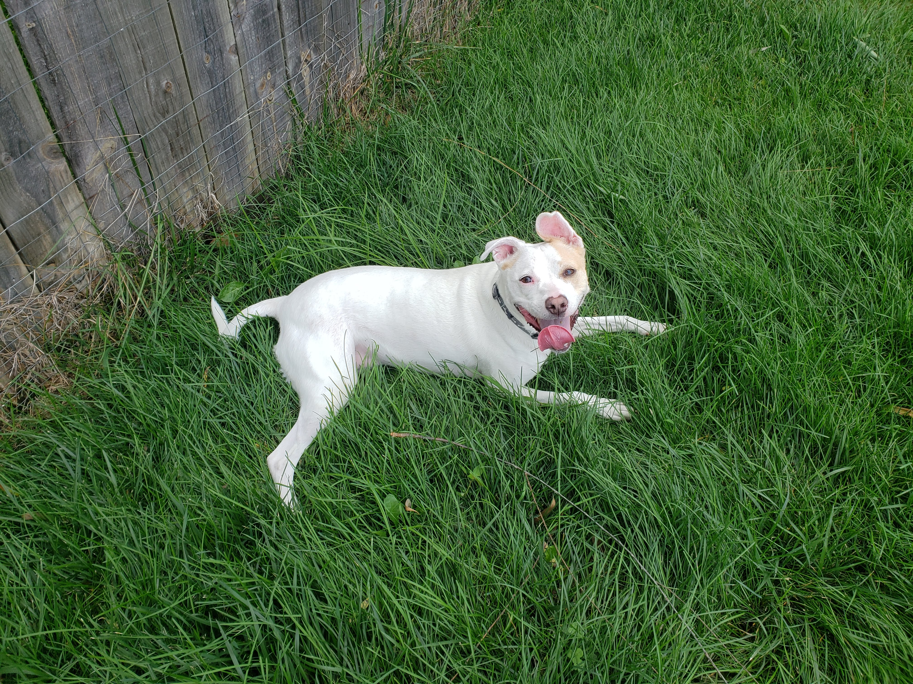
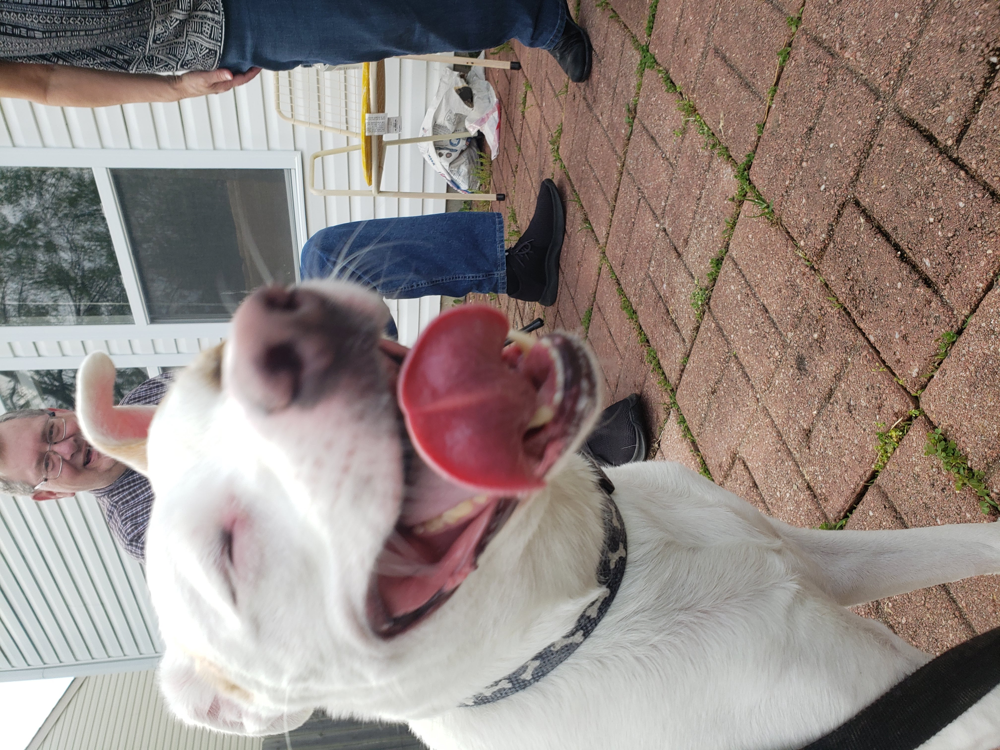
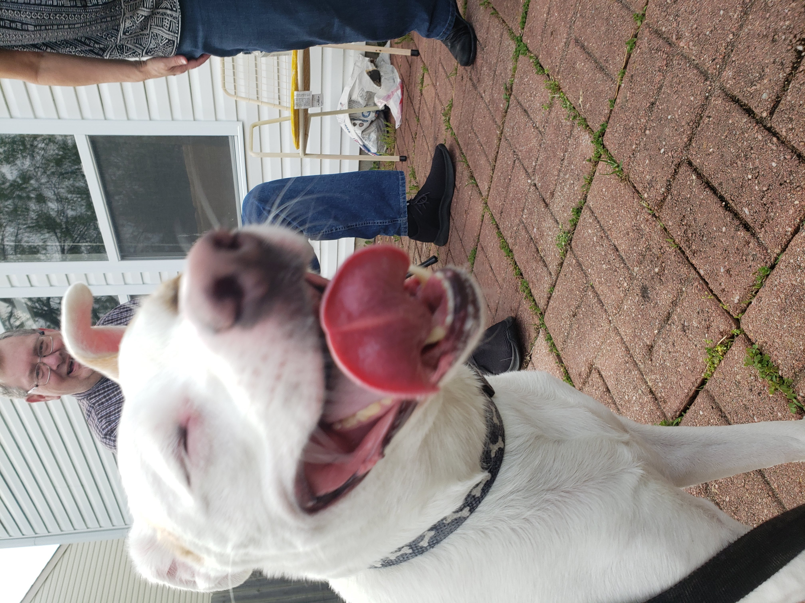

A Daisy Day
Hello! This is a model site for me to practice various coding languages while sharing Daisy's adventures. Click here to learn more about the purpose of this site, or keep reading to learn more about Daisy!
Daisy
We rescued Daisy when she was about a year old. Despite her previous trauma, she warmed up to my family and I very quickly.

She has her quirks .. she won't come to you unless you are at her height, she has to eat in the same room as you while you are eating, and she won't go outside by herself.

But she has nothing but love in her soul, she hugs you when you come back home or you make her really happy!

She licks you to make sure you're okay, and curls up next to you at night after making sure everything is safe and secure.
 

She rarely barks and never bites, unless youre her favorite chew toy or rawhide!

She is skittish around new people, but loves to play with other dogs. But not as much as she loves to play with her hoomans, running around making figure 8's around them, playing tug of war -- she hasn't quite gotten "fetch" down but she'll point out where you threw it!